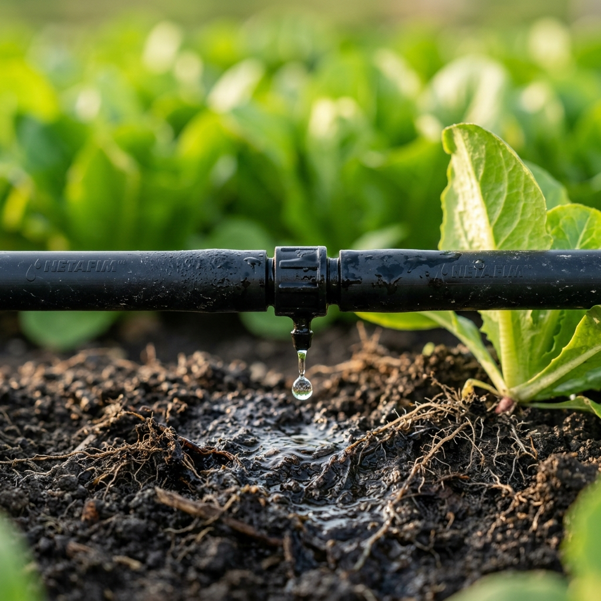
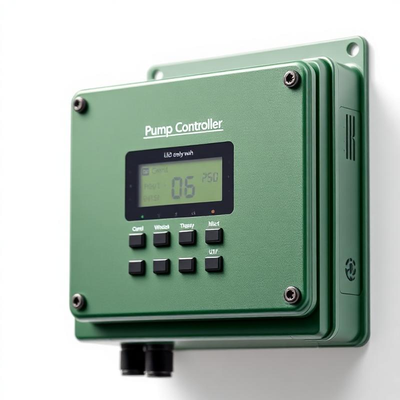
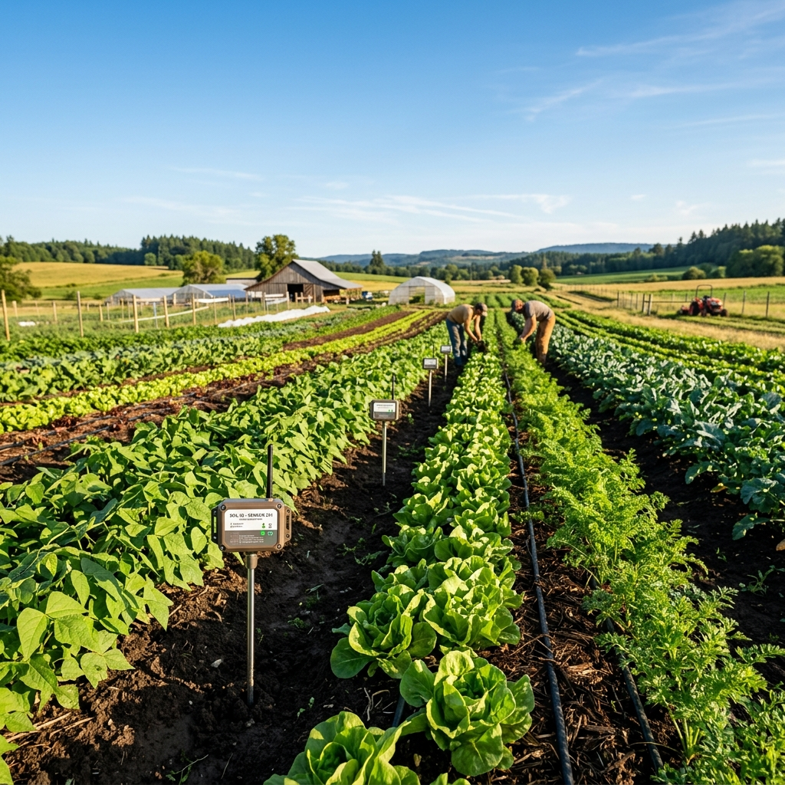
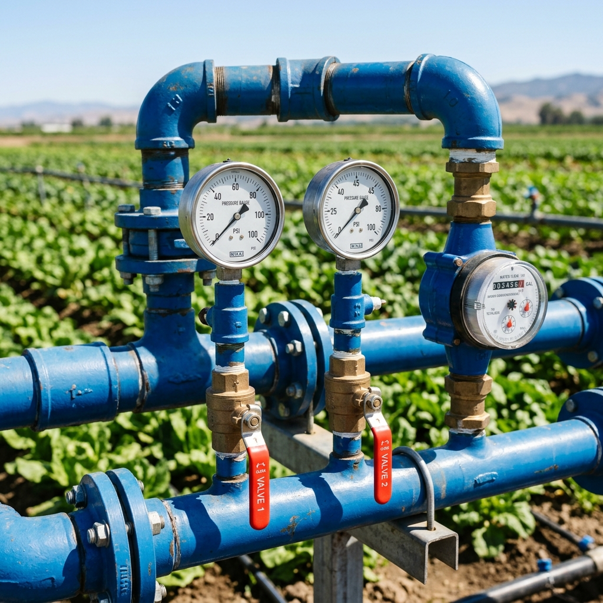

What We Deliver
Agriculture Automation Solutions
Practical solutions for common farming challenges. Each system is built from modular devices configured specifically for your farm.

Smart Irrigation Automation
Automate irrigation based on real soil moisture data. Water only when needed, and only as much as needed.
- Soil moisture-based triggers
- Crop-specific schedules
- Rain-aware blocking

Pump Monitoring & Control
Control your pumps remotely and receive alerts for failures. No more late-night trips to the field.
- Remote ON/OFF control
- Automatic scheduling
- Failure notifications

Soil & Weather Monitoring
Track soil conditions and weather patterns to make informed decisions about irrigation and crop care.
- Real-time soil moisture
- Temperature & humidity
- Historical data trends

Water & Power Usage Tracking
Monitor water consumption and power usage to optimize costs and identify inefficiencies.
- Flow rate monitoring
- Power consumption tracking
- Usage reports